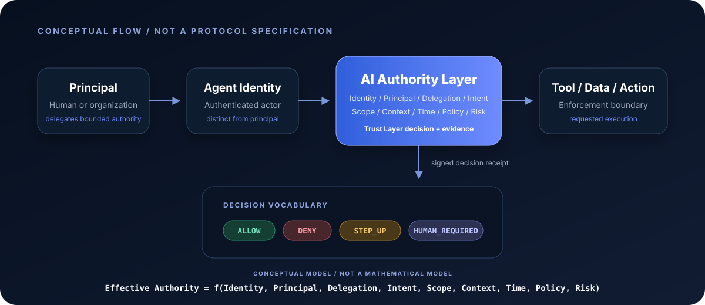
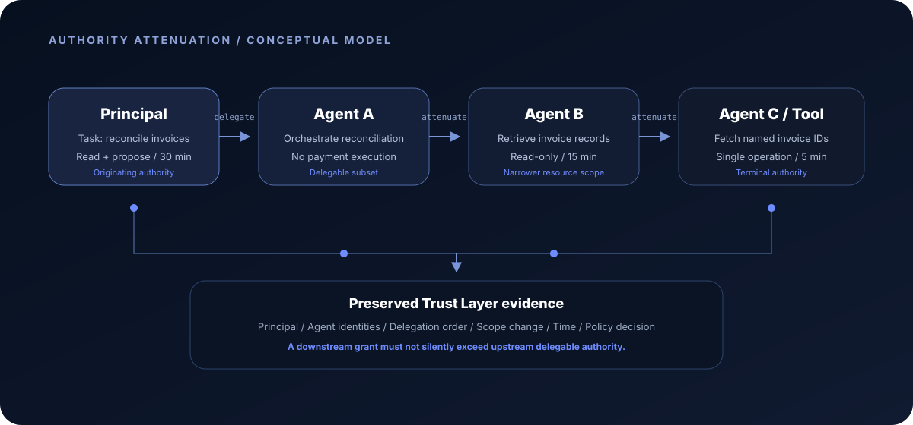

Research Abstract
Abstract
Enterprise identity systems are beginning to recognize AI agents as distinct principals. NIST has placed software and AI agent identity and authorization on an explicit research agenda; Microsoft Entra documents agent identities with separate subject and actor semantics; and Okta documents agent-to-agent token exchange with configured delegation links [R1] [R2] [R3] [R6]. These are material signals, but they do not by themselves establish a settled architecture for autonomous authority. An identity can show which agent is present. A permission can show what a credential nominally permits. Neither alone proves on whose behalf a particular action is being taken, for what task, under which delegation chain, within what context and time window, or whether the action remains justified after conditions change. Recent research on authenticated delegation and authorization propagation treats these questions as distinct system problems rather than ordinary service-account administration [R21] [R23]. This Frontier Research report synthesizes those signals into an ACE hypothesis: autonomous systems may require an AI Authority Layer that evaluates effective authority as a contextual relationship among identity, principal, delegation, intent, scope, context, time, policy, and risk. The proposal is a conceptual model, not a standard, a claim of invention, or a production roadmap. Its purpose is to define falsifiable questions, evidence requirements, and research boundaries that can be reviewed as protocols and deployments mature.
Observed Evidence
1. Research Boundary: A Synthesis, Not a Claim of Invention
The phrase AI Authority Layer is used here as a systematic abstraction over signals that already exist in identity engineering, authorization protocols, vendor products, standards discussions, and academic research. OAuth has long distinguished a resource owner, client, authorization server, resource server, scopes, and delegated access. Token Exchange adds subject and actor relationships; Rich Authorization Requests adds structured authorization details; Zero Trust rejects trust based only on network location [R14] [R15] [R20]. Agent-specific work now extends these foundations to non-human principals that plan, call tools, and delegate tasks. The ACE contribution in this report is therefore organizational: separate six concepts that are often collapsed—Identity, Authentication, Permission, Delegation, Authority, and Evidence—and ask what must be true for an autonomous action to be justified at runtime.
The evidence cutoff is 19 August 2026. Product documentation shows what vendors describe and expose, not what every customer configuration can prove. Internet-Drafts are works in progress; they may change, expire, or never become standards. The expired Agent Authorization Profile is retained only as a historical emerging signal, while active drafts are labeled as such [R9] [R10] [R11] [R12] [R13]. Preprints are evidence of research attention and proposed mechanisms, not evidence of broad deployment or operational effectiveness. Even the trajectory-assurance paper, which states acceptance to a forthcoming 2026 venue, remains bounded evidence for this report because the event had not occurred by the cutoff [R24]. This status discipline matters: convergence in vocabulary can indicate a forming problem without proving that one architecture will win.
The report also avoids a category mistake between legal authority and technical authorization. Organizations may use contracts, corporate roles, fiduciary duties, agency law, or regulation to determine who bears responsibility. A runtime system cannot resolve those doctrines merely by issuing a token. It can, however, preserve facts that legal, risk, and operational teams need: who initiated a task, which agent acted, what was delegated, which constraints applied, what decision was made, and what occurred. Authenticated-delegation research explicitly connects technical chains of authority with accountability while acknowledging unresolved legal adaptation [R21]. The AI Authority Layer hypothesis is limited to this technical and evidentiary role.
Observed Evidence
2. Identity Is Becoming Necessary Infrastructure
The first observable transition is from treating agents as anonymous application behavior to representing them as manageable identities. Microsoft Entra describes an agent identity as a special service principal created from an agent identity blueprint. Its documentation distinguishes autonomous agent tokens from interactive cases in which the token subject is a user and the actor is the agent identity. It also associates agent identities with sponsors, blueprints, tenant-local identifiers, lifecycle operations, and policy application [R3] [R5]. These design choices make an agent visible to existing administrative systems. They answer questions such as which account requested a token, what kind of agent was deployed, who sponsors it, and which tenant can govern it.
NIST's AI Agent Standards Initiative and the NCCoE concept paper reinforce the same direction at an institutional level. NIST identifies agent authentication, identity infrastructure, authorization, security, and evaluation as active areas, while the NCCoE project focuses on applying identity and authorization approaches to enterprise software and AI agents [R1] [R2]. The OpenID Foundation's 2025 whitepaper similarly frames agentic identity as a problem involving entities, delegation, interactions, and accountability rather than a simple login event [R8]. Together these sources support a bounded conclusion: distinct identity for agents is moving toward enterprise infrastructure. They do not establish that identity alone can govern an autonomous workflow. Instead, they provide the stable subject on which richer authority decisions may depend.
Emerging Problem
3. The Gap Between Being Identified and Being Authorized to Act
Authentication answers whether a presented identity can be verified. Permission describes a grant associated with an identity, role, token, capability, or policy relation. Authority is narrower and more situational: whether this agent may perform this action now, on behalf of this principal, for this purpose, with this resource, under this delegation history and current risk state. Microsoft documents delegated and application permissions for agent identities and blocks a set of high-privilege roles and Graph permissions [R4]. That is meaningful least-privilege engineering, but a static grant still cannot encode every fact that may determine whether a particular autonomous action is justified. A calendar-reading scope, for example, does not establish that a meeting change serves the user's current task, remains within an approved time window, or may be delegated to a second agent.
The distinction becomes clearer when an agent has technically valid credentials but the action conflicts with the principal's bounded intent. A service may accept the token because the issuer, audience, signature, and scope are valid. Yet the requested transfer amount, destination, data classification, task phase, or downstream recipient may fall outside the intended mandate. Rich Authorization Requests provides a standardized container for fine-grained authorization details, and Resource Indicators can restrict the target resource [R15] [R17]. Those are relevant building blocks, not a complete semantic answer. RFC 9396 explicitly leaves the meaning and comparison of authorization details to API-specific implementations. The emerging gap is therefore not merely a missing token field. It is the absence of a generally accepted way to bind delegated intent, policy, context, and evidence across an autonomous execution.
A second gap concerns the difference between capability and legitimacy. An agent may be technically capable of calling a payroll API and possess a token containing the required scope. The principal may nevertheless have authorized only a reconciliation task, not a payment. Conversely, a principal may express a legitimate task that the agent lacks permission to complete. Secure execution requires both conditions: the infrastructure grant must permit the operation, and the operation must remain within the delegated task under current policy. Agent Operation Authorization proposes separating a structured operation proposal from a token confirming a specific operation, while cryptographically verifiable authorization research formalizes the non-implication from authentication or delegation to authorization of a concrete request [R11] [R25]. These are proposed approaches, but the distinction they expose is independently testable.

ACE Hypothesis
4. Six Concepts That Should Not Be Collapsed
ACE proposes a six-part conceptual vocabulary. Identity is the persistent or session-bound representation of an agent. Authentication is the process that verifies possession or control of credentials associated with that identity. Permission is a rule or grant describing actions or resources the identity may access. Delegation records that a principal transfers a bounded ability to act to another entity. Authority is the effective, contextual justification for a specific action. Evidence is the artifact that allows another party to examine the identity, grant, decision, execution, and result. The categories overlap operationally but support different claims. A signed token may be authentication evidence and carry permissions; it is not automatically proof that the agent's eventual tool call matched the principal's task or that the action was executed as authorized.
Existing protocols illustrate why this separation is useful. OAuth Token Exchange defines subject and actor relationships and can represent delegation or impersonation semantics [R14]. W3C Verifiable Credentials provides a general data model for machine-verifiable credentials [R19]. DPoP can sender-constrain OAuth tokens to reduce replay by parties that do not possess the relevant key [R18]. Each mechanism strengthens a different part of the chain. None, used alone, guarantees that a model-generated action was within a task's intent, that a sub-agent received attenuated authority, that policy was evaluated against current context, and that execution matched the approved request. The six-part vocabulary makes it possible to state exactly which claim an artifact supports and where evidence is still missing.
Emerging Problem
5. Delegation Turns Authorization into a Chain Property
In a single-hop workflow, a human may authorize Agent A to perform a bounded task. In a multi-agent workflow, Agent A asks Agent B to retrieve data, Agent B invokes a tool, and a later agent synthesizes or executes the result. The security question is no longer only whether each participant has a valid identity. The system must determine whether every transfer preserves the originating principal, narrows or preserves the allowed scope, respects the intended purpose, and remains valid in time and context. Okta documents delegation links identifying the users, applications, or agents that may authorize another agent, and its agent-to-agent connection documentation describes a recorded delegation chain in access tokens [R6] [R7]. This is concrete product evidence that delegated relationships are becoming inspectable objects.
Research treats the same issue as an architectural invariant. The authenticated-delegation position paper proposes agent-specific credentials and auditable chains built on OAuth and OpenID Connect [R21]. The authorization-propagation preprint argues that multi-agent systems must preserve authorization invariants as agents retrieve data, delegate tasks, and synthesize results across changing boundaries [R23]. An active individual Internet-Draft on agent-to-agent trust asks how authorization can propagate without escalation and adopts scope inheritance and provenance mechanisms as proposed design elements [R13]. These works differ in maturity and mechanism, but converge on one question: authority downstream should not silently become broader than authority upstream.
This report calls that property authority attenuation. For a delegation from A to B, B's effective authority should be no greater than the intersection of A's delegable authority, the explicit subtask, the receiving system's policy, and the current context. Attenuation is not only fewer OAuth scopes. It may reduce accessible records, allowed operations, monetary limits, execution environments, geographic regions, delegation depth, validity duration, or the ability to trigger irreversible actions. Equality may be acceptable when the task requires the same bounded authority, but expansion should require a new authorization event by an entitled principal. Whether this property can be represented consistently across vendors is an open research and interoperability question.

Observed Evidence
6. Protocol Signals: Useful Components, No Settled Whole
The protocol landscape contains substantial reusable infrastructure. OAuth Token Exchange can exchange a subject token and an actor token and represent an actor acting on behalf of a subject [R14]. Rich Authorization Requests can carry structured, fine-grained authorization data beyond flat scopes [R15]. Resource Indicators restrict the intended resource, DPoP binds a token to proof of key possession, and the OAuth Security Best Current Practice consolidates current defenses for OAuth deployments [R16] [R17] [R18]. W3C Verifiable Credentials offers a machine-verifiable credential model that could carry selected delegation or authority assertions [R19]. These standards are not agent-specific solutions, but they reduce the need to invent incompatible foundations.
Agent-focused Internet-Drafts show multiple integration paths. AI Agent Authentication and Authorization composes workload identity and OAuth-family mechanisms rather than proposing one new protocol [R9]. Agent Operation Authorization proposes a structured operation request and an authorization token for a specific operation [R11]. The AI Agent Authorization Integration Framework combines cross-domain identity, policy authorization, consent evidence, and multi-hop delegation [R12]. The expired Agent Authorization Profile proposed structured claims for task context, constraints, delegation, and oversight, but it has no formal standing and is no longer active [R10]. These drafts are evidence that practitioners are exploring similar requirements. They are not proof of consensus, interoperability, or production safety.
A likely near-term architecture is compositional rather than monolithic: an enterprise identity provider establishes the human and agent identities; an authorization service evaluates policy and context; token or credential mechanisms carry bounded claims; resource servers enforce decisions; and evidence services preserve decision and execution records. The unresolved issue is semantic continuity. If one system expresses purpose as a rich authorization detail, another represents it as policy input, and a third logs only a scope string, the chain may be technically authenticated while losing the facts needed to justify the action. The research challenge is to define the minimum authority semantics and evidence fields that must survive translation without requiring every vendor to use the same internal implementation.
Interoperability also creates a trust-boundary problem. The issuer that authenticates an agent may not operate the resource server, the downstream agent, or the evidence store. Each party can validate different facts and may use different identifiers, policy languages, clocks, and revocation channels. The Integration Framework draft explicitly combines cross-domain identity with policy, consent evidence, and multi-hop delegation, while Okta's documented flow exchanges credentials through authorization servers before reaching a target resource [R6] [R12]. These designs indicate that cross-domain composition is possible, but they do not establish common semantics for every authority claim. A robust evaluation must therefore test both cryptographic validity and preservation of meaning across boundaries.
ACE Hypothesis
7. Authority Must Be Contextual, Temporal, and Revocable
A permission granted yesterday may not justify an action today. The user may have revoked consent; the agent may have changed version; the resource may have moved into a restricted classification; the transaction may exceed a risk threshold; or the workflow may have entered a phase where human approval is required. Microsoft documents conditional access, lifecycle governance, sponsors, permission restrictions, and administrative disable or revoke operations for agent identities [R3] [R4]. Okta documents short-lived resource tokens and revocation behavior in its agent token-exchange flow [R6]. These mechanisms support contextual and temporal governance, although the exact evidence available in a deployment depends on configuration.
The ACE hypothesis is that high-consequence agents will require authority re-evaluation at material state transitions, not only at login or token issuance. Relevant triggers could include a new tool, a new sub-agent, a sensitive data class, a monetary threshold, a change from read to write, a model or runtime change, an anomalous risk score, a policy update, or a request to cross an organizational boundary. Re-evaluation need not mean a human approves every step. An automated decision may return ALLOW, DENY, STEP_UP, or HUMAN_REQUIRED according to policy. What matters is that the decision reflects current facts and that the resulting evidence identifies which facts and policy version were evaluated.
Operation-level authorization proposals provide one emerging signal for this direction. The active Agent Operation Authorization Internet-Draft defines a structured proposal and a token representing confirmed authorization for a specific operation, with runtime enforcement and traceability as stated goals [R11]. Cryptographically verifiable authorization research goes further by hypothesizing a proof relation that binds an agent principal, request, context, and policy satisfaction while separating identity, authorization, and execution evidence [R25]. Both remain bounded proposals. They nevertheless make the same deficiency visible: proving that an agent owns a credential is different from proving that a concrete, context-dependent request satisfied the applicable policy.
Emerging Problem
8. From Per-Action Authorization to Trajectory Assurance
Autonomous behavior unfolds as a sequence. Each action may be individually permitted while the combined trajectory violates a constraint. A research agent might lawfully read two datasets but produce a synthesis that crosses an information boundary. A financial agent might make several individually allowed adjustments whose aggregate exceeds a daily exposure limit. A support agent might repeatedly disclose small fragments that together reveal a protected record. The trajectory-assurance paper frames this as behavioral containment: system safety can depend on whether the sequence remains within state-dependent invariants, not only whether each action passes a stateless check [R24]. The paper is a vision-oriented work, so its examples and proposed agenda should not be read as validated deployment results.
Authority at trajectory level requires memory of relevant decisions and changes. A verifier may need to know the initial principal and task, every delegation, which data influenced later steps, whether a previous approval remains applicable, how cumulative limits changed, and which policy version governed each transition. Authorization propagation research identifies aggregation inference and workflow-scoped authorization as problems that conventional role and relationship systems do not automatically solve [R23]. Intelligent AI Delegation similarly treats delegation as more than task decomposition, emphasizing transfer of authority, responsibility, monitoring, and adaptation to failures [R22]. These papers offer different abstractions, but both suggest that autonomous authority is stateful.
A practical research program should compare at least three enforcement levels. Per-request enforcement evaluates each tool or API call independently. Workflow enforcement binds decisions to a task identifier and cumulative state. Trajectory assurance evaluates whether the evolving sequence continues to satisfy explicit invariants. The third level may be unnecessary for low-risk assistants and too expensive for every action. Its value should be tested in scenarios where lawful local actions can compose into an unlawful or unsafe global outcome. The acceptance question is not whether a system stores a long trace; it is whether the trace contains enough authenticated, ordered, policy-linked evidence to detect and explain a trajectory-level violation.
ACE Hypothesis
9. Evidence Is the Bridge from Policy Claim to Verifiable Action
An authority architecture is incomplete if it returns a decision but cannot support later examination. ACE distinguishes five evidence objects. Identity evidence supports the claim that a known agent or principal participated. Delegation evidence supports the claim that authority moved from one entity to another under stated constraints. Authorization evidence supports the claim that a request was evaluated against a policy and context. Execution evidence supports the claim that a particular action occurred. Outcome evidence records the resulting state or artifact. Cryptographically verifiable authorization research explicitly separates identity, authorization, and execution evidence, while authenticated-delegation research emphasizes auditable chains of accountability [R21] [R25].
Evidence completeness does not require storing every prompt, private attribute, or reasoning trace. Excessive collection creates privacy, security, and cost risks. A minimal decision receipt might contain pseudonymous principal and agent identifiers, delegation references, requested action and resource, task or purpose binding, policy identifier and version, relevant context hashes or bounded attributes, timestamp, expiry, decision, reason codes, enforcement point, execution reference, and integrity protection. Sensitive values can remain customer-held or be represented by commitments when appropriate. W3C Verifiable Credentials and proof-of-possession mechanisms demonstrate available patterns for portable and holder-bound evidence, but they do not determine which semantic fields an authority receipt must include [R18] [R19].
The acceptance test should therefore be claim-specific. To demonstrate identity attribution, show that the executing agent can be distinguished from the user and service. To demonstrate delegated authority, reconstruct the chain and show that every hop was valid and non-expanding. To demonstrate contextual authorization, reproduce the policy decision from the recorded inputs or verify an equivalent signed receipt. To demonstrate execution alignment, show that the action executed matches the action authorized. A system may demonstrate one claim and have insufficient evidence for another. This prevents a valid token, a generic audit log, or a vendor feature statement from being treated as universal proof.
ACE Hypothesis
10. ACE Hypothesis: An AI Authority Layer
ACE proposes the following conceptual model: Effective Authority = f(Identity, Principal, Delegation, Intent, Scope, Context, Time, Policy, Risk). This is a conceptual model, not a mathematical model or implementation formula, and the variables are not assumed to be independent. It is a checklist for the information that may affect a runtime authority decision. Identity names the acting agent. Principal identifies the human or organization on whose behalf it acts. Delegation describes the authorized chain. Intent binds the action to a task or purpose. Scope constrains resources and operations. Context captures environment and workflow state. Time establishes validity. Policy defines the governing rule. Risk allows current signals to change the required assurance level.
The proposed layer sits between an authenticated agent request and a consequential tool, data, or action boundary. It consumes verified identity and delegation data, evaluates policy with current context, and returns a bounded decision such as ALLOW, DENY, STEP_UP, or HUMAN_REQUIRED. It also emits evidence linked to enforcement and later execution. It should complement, not replace, enterprise identity providers, policy engines, gateways, databases, or audit systems. A vendor could implement the functions inside an existing identity platform, a policy service, a gateway, a customer-hosted runtime, or a composed set of services. The hypothesis concerns required semantics and evidence, not ownership of the product category.
The model also creates a falsifiable test. Given a scenario Human → Agent A → Agent B → Tool → Data, can the system produce evidence of the originating principal, each agent identity, the delegation chain, the non-expanded authority at every hop, the task and resource constraints, the policy decision, the denial or approval, and the executed action? Existing protocols provide many inputs to this test, and products are beginning to expose portions of the chain [R6] [R7] [R9] [R12] [R14]. If common enterprise configurations can already demonstrate the complete claim without a distinct authority abstraction, the hypothesis weakens. If they repeatedly cannot, the missing evidence becomes measurable rather than rhetorical.
Open Questions
11. Falsifiable Predictions and Open Research Questions
AFR-2026-001 records four predictions for review at six, twelve, and twenty-four months. First, major enterprise identity platforms will expose an inspectable evidence object binding agent authorization to principal, task or purpose, resource scope, and bounded validity. Second, at least one multi-vendor specification will define attenuation or re-evaluation across more than one agent delegation hop. Third, enterprise assurance products will distinguish identity, authorization, and execution evidence. Fourth, at least one enterprise deployment pattern will re-evaluate authority after a material change in risk, context, policy, or delegation state. These predictions are grounded in current institutional, product, protocol, and research signals, but each can fail [R1] [R3] [R6] [R9] [R11] [R12] [R23] [R25].
The immediate research questions are technical and empirical. What minimum semantics must survive across vendors? How should purpose be represented without exposing sensitive user intent? Which delegation constraints can be compared mechanically across heterogeneous policy systems? When is scope equality safe, and when must every hop attenuate? How quickly must revocation propagate through asynchronous agents? How can a verifier distinguish an approved plan from the action actually executed? Which context attributes can be committed or proven without disclosure? What is the operational cost of trajectory-level checks, and which risk classes justify it? How should authority apply when the principal is an organization, a team, another service, or a coalition rather than one human?
Two boundaries require particular caution. First, cryptographic proof can strengthen integrity and selective disclosure, but it cannot prove that an incomplete policy captures the principal's true intent. The cryptographically verifiable authorization and biometric-binding papers are early proposals with bounded prototypes, assumptions, and privacy tradeoffs; they should be evaluated rather than adopted as default designs [R25] [R26]. Second, hardware-rooted identity and attestation may eventually strengthen local enforcement and execution evidence, but hardware does not define legitimate authority. It can attest which code or key participated while policy, delegation, context, and human governance still determine what should have been allowed.
The next ACE research step is not to declare the layer established. It is to turn the conceptual distinctions into acceptance scenarios and compare the evidence produced by real configurations. A useful experiment should include a human principal, two delegating agents, a tool boundary, a sensitive resource, an attempted scope expansion, a context change, a revocation event, and a required reconstruction of the final decision. Results should be reported as demonstrated, not demonstrated, insufficient evidence, or not applicable within the tested configuration. That discipline would allow the authority hypothesis to be strengthened, narrowed, or rejected based on observable proof.
Prediction Record
AFR Prediction Ledger
Each statement is permanent, falsifiable, and scheduled for review at six, twelve, and twenty-four months. Publication dates remain unset while this report is a draft.
By the 24-month review, at least two major enterprise identity platforms will expose a production mechanism that binds an AI agent authorization decision to a principal, a task or purpose, a constrained resource scope, and a bounded validity period in one inspectable evidence object.
Falsification signals
- Major identity platforms retain only static agent identities and conventional OAuth scopes without task or purpose binding.
- Enterprise customers reject task-bound authorization evidence as unnecessary operational overhead.
By the 24-month review, at least one interoperable specification with active multi-vendor participation will define how authority is attenuated or re-evaluated across more than one agent-to-agent delegation hop.
Falsification signals
- Interoperability work standardizes only transport authentication and leaves multi-hop authority entirely implementation-specific.
- Production multi-agent deployments converge on single-hop service identities without preserving originating authority.
By the 24-month review, enterprise agent assurance products will distinguish identity evidence, authorization evidence, and execution evidence instead of treating an access token or audit log as sufficient proof for all three claims.
Falsification signals
- Enterprise assurance practice continues to accept authentication records alone as proof of authorized agent behavior.
- No commercial or standards artifact adopts separate evidence categories for authorization and execution.
By the 24-month review, at least one enterprise deployment pattern will require authority to be re-evaluated during an agent trajectory after a material change in risk, context, policy, or delegation state rather than only when credentials are issued.
Falsification signals
- Production systems rely on issuance-time authorization plus static expiration without runtime context re-evaluation.
- Trajectory-level checks fail to demonstrate operational value beyond conventional per-request policy enforcement.
Evidence Base
References
-
[R1]
AI Agent Standards Initiative
National Institute of Standards and Technology · NIST · 2026-02-17; updated 2026-08-14
https://www.nist.gov/artificial-intelligence/ai-agent-standards-initiativeofficial program page · official-initiative
-
[R2]
Accelerating the Adoption of Software and AI Agent Identity and Authorization
National Cybersecurity Center of Excellence · NIST NCCoE · 2026-02-05
https://www.nccoe.nist.gov/projects/software-and-ai-agent-identity-and-authorizationconcept paper · official-concept-paper
-
[R3]
Overview of agent identities in Microsoft Entra
Microsoft · Microsoft Learn · 2026-03-30
https://learn.microsoft.com/en-us/entra/agent-id/agent-identitiescurrent documentation · product-documentation
-
[R4]
Authorization in Microsoft Entra Agent ID
Microsoft · Microsoft Learn · 2026-06-12
https://learn.microsoft.com/en-us/entra/agent-id/authorization-agent-idcurrent documentation · product-documentation
-
[R5]
Microsoft Entra Agent ID documentation
Microsoft · Microsoft Learn · 2026
https://learn.microsoft.com/en-us/entra/agent-idcurrent documentation · product-documentation
-
[R6]
Set up AI agent-to-agent token exchange
Okta · Okta Developer · 2026
https://developer.okta.com/docs/guides/ai-agent-to-agent-token-exchange/authserver/maincurrent documentation · product-documentation
-
[R7]
Agent-to-agent connections
Okta · Okta Identity Engine Documentation · 2026
https://help.okta.com/oie/en-us/content/topics/ai-agents/ai-agent-agent-to-agent.htmcurrent documentation · product-documentation
-
[R8]
Identity Management for Agentic AI
OpenID Foundation · OpenID Foundation · 2025-10
https://openid.net/wp-content/uploads/2025/10/Identity-Management-for-Agentic-AI.pdfpublished whitepaper · industry-whitepaper
-
[R9]
AI Agent Authentication and Authorization
Pieter Kasselman et al. · IETF Datatracker · 2026
https://datatracker.ietf.org/doc/draft-klrc-aiagent-auth/active individual Internet-Draft; work in progress; no formal IETF standing · internet-draft
-
[R10]
Agent Authorization Profile (AAP) for OAuth 2.0
Angel Cruz · IETF Datatracker · 2026-02-07
https://datatracker.ietf.org/doc/draft-aap-oauth-profile/Expired individual Internet-Draft as of 2026-08-11; historical work in progress; no formal IETF standing · internet-draft
-
[R11]
Agent Operation Authorization
Dapeng Liu, Judy Zhu, Suresh Krishnan · IETF Datatracker · 2026-03-16
https://datatracker.ietf.org/doc/draft-liu-agent-operation-authorization/active individual Internet-Draft -02; work in progress; no formal IETF standing · internet-draft
-
[R12]
AI Agent Authorization Integration Framework
Dapeng Liu et al. · IETF Datatracker · 2026-07-06
https://datatracker.ietf.org/doc/draft-liu-ai-agent-authorization-integration/active individual Internet-Draft -00; work in progress; no formal IETF standing · internet-draft
-
[R13]
Agent-to-Agent Trust, Identity, and Verifiable Provenance
Tony Trujillo · IETF Datatracker · 2026-07
https://datatracker.ietf.org/doc/draft-tonyai-a2a-trust/active individual Internet-Draft -01; work in progress; no formal IETF standing · internet-draft
-
[R14]
OAuth 2.0 Token Exchange
Michael B. Jones et al. · RFC Editor · 2020-01
https://www.rfc-editor.org/rfc/rfc8693RFC 8693, Proposed Standard · standard
-
[R15]
OAuth 2.0 Rich Authorization Requests
Torsten Lodderstedt, Justin Richer, Brian Campbell · RFC Editor · 2023-05
https://www.rfc-editor.org/rfc/rfc9396RFC 9396, Proposed Standard · standard
-
[R16]
Best Current Practice for OAuth 2.0 Security
Torsten Lodderstedt et al. · RFC Editor · 2025-01
https://www.rfc-editor.org/rfc/rfc9700RFC 9700, Best Current Practice · standard
-
[R17]
Resource Indicators for OAuth 2.0
Brian Campbell, John Bradley, Hannes Tschofenig · RFC Editor · 2020-02
https://www.rfc-editor.org/rfc/rfc8707RFC 8707, Proposed Standard · standard
-
[R18]
OAuth 2.0 Demonstrating Proof of Possession
Daniel Fett et al. · RFC Editor · 2023-09
https://www.rfc-editor.org/rfc/rfc9449RFC 9449, Proposed Standard · standard
-
[R19]
Verifiable Credentials Data Model v2.0
Manu Sporny et al. · World Wide Web Consortium · 2025-05-15
https://www.w3.org/TR/vc-data-model-2.0/W3C Recommendation · standard
-
[R20]
Zero Trust Architecture
Scott Rose et al. · National Institute of Standards and Technology · 2020-08
https://doi.org/10.6028/NIST.SP.800-207NIST Special Publication 800-207 · standard
-
[R21]
Position: AI Agents Need Authenticated Delegation
Tobin South et al. · ICML 2025 Position Paper Track · 2025-05-01
https://openreview.net/forum?id=9skHxuHyM4peer-reviewed position paper; ICML 2025 oral · original-paper
-
[R22]
Intelligent AI Delegation
Nenad Tomasev, Matija Franklin, Simon Osindero · arXiv · 2026-02-12
https://arxiv.org/abs/2602.11865preprint · original-paper
-
[R23]
Authorization Propagation in Multi-Agent AI Systems: Identity Governance as Infrastructure
Krti Tallam · arXiv · 2026-05-06
https://arxiv.org/abs/2605.05440preprint · original-paper
-
[R24]
Securing Agentic AI: From Per-Action Checks to Trajectory Assurance
Alireza Lotfi et al. · arXiv · 2026-08
https://arxiv.org/abs/2608.01558preprint stating acceptance to the forthcoming ACM AI Leadership Summit 2026 Visionary Track · original-paper
-
[R25]
Cryptographically Verifiable Authorization for Autonomous AI Agents: A Falsifiable Hypothesis and Proof-of-Concept
M. Llambi-Morillas, D. Fernandez-Fernandez · arXiv · 2026-08-12
https://arxiv.org/abs/2607.21325preprint with bounded proof-of-concept · original-paper
-
[R26]
Binding Biometrics with AI Agent Identifiers for Delegation of Authority
Joseph Geo Benjamin, Anil K. Jain, Karthik Nandakumar · arXiv · 2026-08
https://arxiv.org/abs/2608.04292preprint with bounded prototype evaluation · original-paper
Record
Publication Record
Recommended citation
Ma, Chris. “Beyond Identity: The Emerging Authority Layer for Autonomous AI Systems.” ACE Frontier Research AFR-2026-001, version 1.0, published 20 August 2026. Evidence cutoff 19 August 2026.
Organizational disclosure
ACE is an independent third-party AI evaluation initiative operated by LogionOS, Inc. This report presents a research hypothesis and does not evaluate or promote a LogionOS product.
Evidence boundary
Observed evidence, emerging problems, ACE hypotheses, and open questions are labeled separately. Product documentation describes documented capabilities, not universal deployment outcomes. Internet-Drafts are works in progress. Preprints and bounded prototypes are not treated as industry consensus.